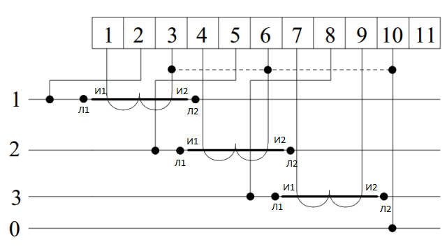

Трехфазный электросчетчик прямого всключения.

Основной принцип сохраняется за исключением того, что сеть трехфазная и необходимо соблюсти прямую последовательность чередования фаз (АВС, ВСА, САБ). В данном случае фазные провода (желтый, зеленый и красный), идущие по направлению от источника подключены к зажимам "1","3","5" и каждая фаза отходящая к потребителю от зажимов "2", "4", "6", обозначена теми же цветами. Так к седьмому зажиму подходит нулевой провод от источника, и от восьмого отходит к потребителю (к нулевой колодке).
Трехфазный электросчетчик трансформаторного включения.
Теперь можно рассмотреть ситуацию когда появилась необходимость подключить прибор учета к потребителю сравнительно большой мощности через трансформаторы тока. Рассмотрим сначала схему которую можно увидеть в руководстве по подключению электросчетчиков. Цифрами 1,2,3 (с левого края рисунка) обозначены фазные провода (цепь напряжения) цифрой 0 обозначен нулевой провод соответственно.Выше цифрами в клетках обозначены зажимы электросчетчика. При подключении трансформатора важно соблюсти правильность подключения начала обмоток И1 и концов И2. Начало токовой обмотки И1 трансформатора тока (далее ТТ) первой фазы необходимо подключить к зажиму "1" а конец токовой обмотки И2 от ТТ первой фазы подключаем к зажиму "3". К зажиму "2" подключаем первую фазу (фазный провод). Со следующими фазами поступаем аналогично: то есть к зажимам "5" и "8" остальных фаз подключаются сами фазы, а к зажимам 4,6,7,9, ТТ которые установлены на этих фазах. Все концы обмоток ТТ (И2) необходимо соединить в общую точку и заземлить.

На данном рисунке можно более "натурально" рассмотреть как подключен электросчетчик. Важно учитывать что данный учет будет функционировать при условии что цепи напряжения электросчетчика (зажимы 2,5,8) запитаны от первичной обмотки (шин) трансформаторов тока обозначенных Л1. Именно тогда начала токовых обмоток И1 соответствующих фаз подключаются к зажимам 1,4,7, а концы И2 к зажимам 2,6,9. Если перевернуть трансформаторы тока так чтобы электросчетчик был подключен к вторичной обмотке (шине) Л2 то и токовые обмотки прийдется поменять местами, т.е. к зажимам 1,4,7 нужно будет подключить концы И2, а к зажимам 2,6,9 подключаем начала И1.